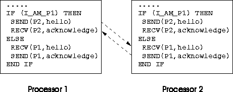

SPMD model relies on:
Each processor runs the same executable program so the message passing must be masked by IF statements, for example,

Figure 17: An Example of Message Passing Between Two Processors in a SPMD
System
Loose synchronisation means that it is occasionally necessary for processors to synchronise. The processors do not have to operate in lockstep!